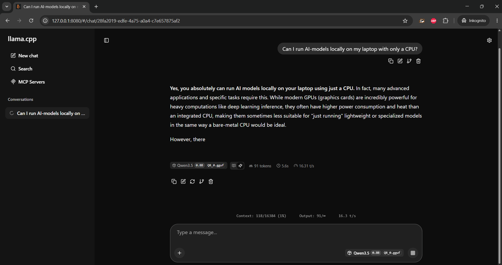
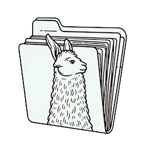
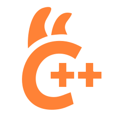
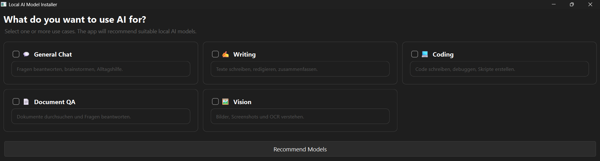
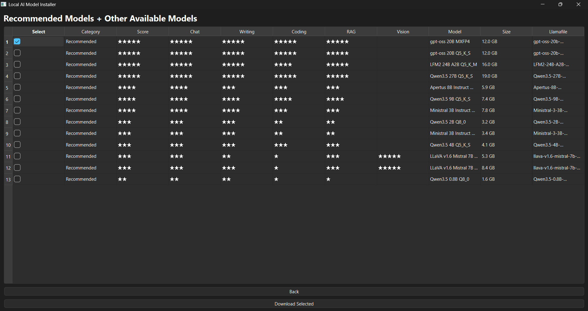
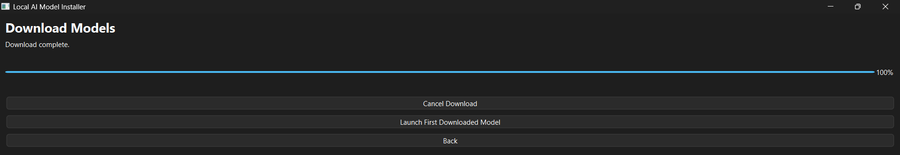
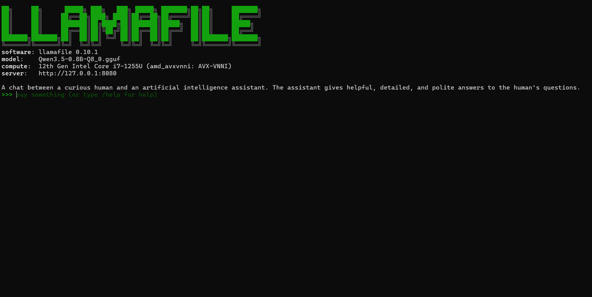
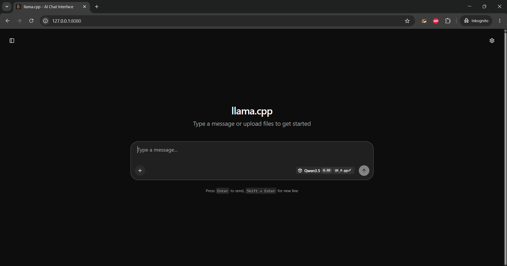

Lokale Open-Source-KI für Windows
Lokale KI. Einfach. Privat. Kostenlos.
OneClickAI macht es unglaublich einfach, moderne KI-Modelle direkt auf dem eigenen Laptop auszuführen – vollständig lokal, ohne Cloud-Zwang und ohne technisches Vorwissen.
Privat & lokal
Offline nutzbar
Modell-Empfehlungen
Ohne GPU möglich
Keine API-Keys
Für Windows · Keine Installation erforderlich · Eine einzelne ausführbare Datei
Lokaler Chat
Vom Modellstart direkt zur Antwort
Nach dem Start öffnet OneClickAI automatisch das lokale Webinterface. Danach kann sofort mit dem Modell interagiert werden.

Motivation
KI-Magie direkt auf dem eigenen Gerät
Das Projekt entstand im Rahmen des Green Tech Hackathons der Climate Week Zürich.
Die Idee dahinter: Moderne KI sollte nicht ausschliesslich in grossen Cloud-Rechenzentren stattfinden. Durch lokale KI-Modelle können Nutzer:innen mehr Privatsphäre erhalten, KI besser verstehen, unabhängiger von Cloud-Anbietern werden und die eigentliche „KI-Magie“ direkt auf ihre eigenen Geräte bringen.
OneClickAI soll den Einstieg in lokale KI so einfach machen wie möglich – ohne technisches Vorwissen.
Warum lokal?
Privatsphäre: Eingaben und Dokumente bleiben auf dem eigenen Laptop.
Zugänglichkeit: Menschen ohne technischen Hintergrund können lokale KI nutzen.
Nachhaltiger denken: KI muss nicht immer über grosse Cloud-Infrastruktur laufen.
Technologiestack
Ein leichtgewichtiges Windows-Tool

llamafile
llama.cppDie Anwendung besteht aus einer einzelnen Windows-Executable, welche das grafische Interface sowie den gesamten Empfehlungs-, Download- und Launch-Workflow steuert.
In wenigen Klicks
So funktioniert es
Von der Auswahl des Einsatzgebiets bis zum lokalen Chat-Interface – ohne Terminalbefehle und ohne manuelle Modellinstallation.
1
Anwendungsfälle wählen

Wähle aus, wofür du KI nutzen möchtest. Die App empfiehlt passende Modelle.
2
Modelle vergleichen

Vergleiche empfohlene Modelle nach Fähigkeiten, Grösse und Eignung.
3
Automatisch herunterladen

Ein Klick genügt. OneClickAI lädt das gewählte Modell automatisch herunter.
4
Lokal starten

Das Modell wird als llamafile lokal auf deinem Gerät gestartet.
5
Im Browser chatten

Das lokale Chat-Interface öffnet sich automatisch im Browser.
Bereit?
Starte deine lokale KI mit OneClickAI.
Lade die Windows-Executable herunter und probiere moderne Open-Source-KI lokal auf deinem Laptop aus.